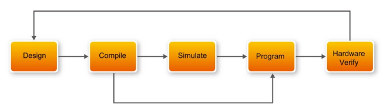
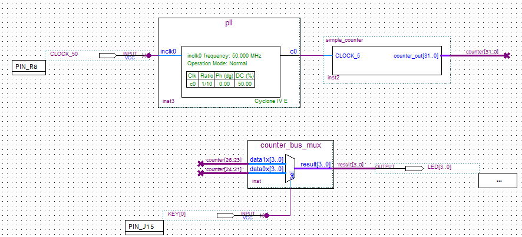

Convert an ATX PSU into a multi-rail bench supply with fused outputs. Plus I gave it variable control via a multi-turn potentiometer


I used an Altera Cyclone IV that was embedded in the DE0-Nano development board, created by terasIC. I followed a tutorial provided by them in their user manual. Fortunate for us, they provide multiple manuals. There are three: the main DE0 Nano User Manual, "My First FPGA for Altera DE0-Nano Board", and "My First Nios II for Altera DE-Nano Board". They can all be found in the DE0-Nano CD-ROM in the terasIC page. The tutorial was a simple blink project which was on the second manual in the list. The blink project counts up to 32 in binary using the LEDs on board. There are 4 LEDs which each have two states, creating a total of 2^4 = 32 possiblities.
My PLL megafunction grabs the 50MHz on board oscillator signal and uses a ratio of 1/10 to bring it to 5MHz. Which was then used as an input for my 32 bit simple counter. The 32 bit counter increments each positive clock edge. Then a multiplexer uses 26..23 on one line and the other 24..21, from which a select line is connected to a button to control the speed of which the LEDs count to 32. The output of the multiplexer goes to four LEDs.
I first started with setting up Quartus Prime which was confusing at first because the software in the manual was pretty old, so I had to change a few things. I then learned how to set up a Block Design File(.bdf) which is where my design will live. I then created a simple 32 bit simple counter using Verilog HDL from which I created Symbol file. After which I created a custom PLL megafunction using the built in wizard creation tool. I also used the same wizard to create a custom multiplexer with 2 data lines of 4 bits each and one 4 bit output. I then used the pin planner and the schematic to see which pins of which bank will I be using for the LEDs, CLOCK signal, and button. After assigning pins, I took into account timing setting by creating a basic Synopsys Design Constraints File(.sdc) which gets used during compilation. One problem I did face here is the fact that my board clock signal was unconstrained, so I had to add in [get_ports {CLOCK_50}] to my sdc so I can attach the base clock to a real port. After this step, I compiled the design, programmed it via USB Blaster, and ta-da it worked.
Skills Worked: Quartus Prime, Basic FPGA Circuit Design, Verilog HDL
References: simple_counter.v , led_blink.sdc , pin_planner , My ChatGPT Tutoring Session
{kind=link}
{kind=link}
{kind=link}